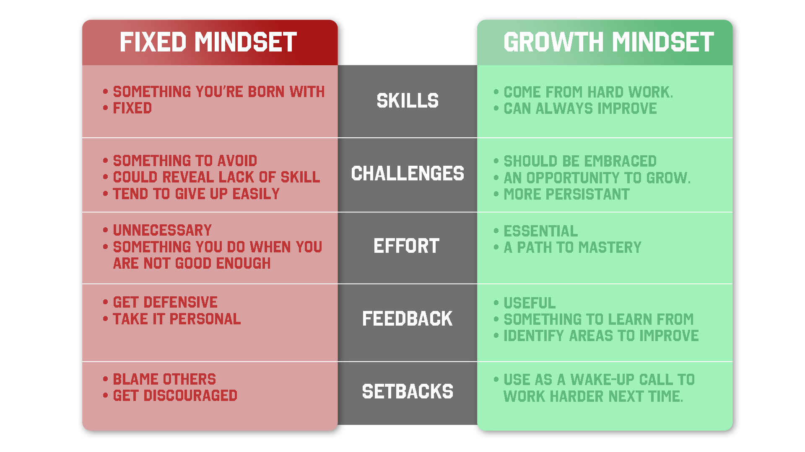

What is Neuroplasticity?
Neuroplasticity is a term which represents the idea that the physical wiring (neurons) of the brain changes according to the thoughts moving through it. Literally if your thoughts are ones of fear, worry, anxiety and negativity then you grow the wiring for more of those ideas and if you direct your thoughts to be ones of love, joy , gratitude and positivity, you will create the wiring for repeating those experiences.
As for learning, there might be people that lack of talent in some area, for example people who are bad at maths. We might think those are abilities that people are born with and they can not be changed. However the reasearch on neuroplasticity shows that as people constantly use a brain region it becomes more and more excitable and easy to use again. Which means our brain can be shaped and trained to be ‘smarter’ in certain area by repeating and practice.
Whati is Growth Mindset?
A growth mindset is the belief that intelligence can be developed. A growth mindset allows people to embrace learning, to welcome challenges and understand the role of effort in creating talent. Growth mindset is contrasted with fixed mindset which is the belief that intelligence is born with and can not be changed.
How neuroplasticity and growth mindset influences your learning?
Studying neuroplasticity and growth mindset inspires me a lot. I had been quite stressed since the beginning of the Dev Academy course. I saw people learned very fast and I felt left behind. I felt like I am not smart enough for studying programming. After learned about neuroplasticity and growth mindset, I understand I should accept my reality exactly as it is without judgement and the influence of negative thoughts. I should believe that hardwork always brings improvement and my brain can be trained to think in a developer way.